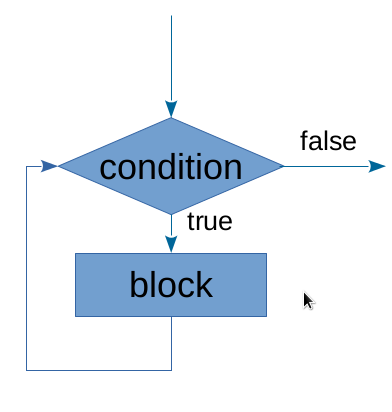

JavaScript - основни синтактични елементи
част 1
Създаден за

Структура на програмата
- Една JavaScript програма е последователност от инструкции (изрази, statements).
- Изразите се разделят един от друг с ';'
- Последователност от изрази, заградена в '{' и '}' се нарича блок.
- Ако направим аналогия с естествените езици:
Български език JavaScript разказ, роман и пр <=> програма изречение <=> израз параграф, абзац <=> блок
Изрази
Израз е всяка една инструкция към Браузера, за да изпълни дадено действие.
// показва „изкачащо“ съобщение с текст „Welcome“
alert(„Welcome“);
// дефинира променливата answer
var answer;
// записва числото 42 в променливата answer
answer = 42;
// задава червен фон на документа
document.body.style.backgroundColor = "red";
Променливи (Variables)
Какво е променлива в JavaScript?
- Променливата е "име" на част от паметта (RAM), в която съхраняваме данни.
- Програмиста задава това име, като следва определени правила.
- След като променливата е създадена можем да записваме в нея стойности и да ги четем, т.е.да ги използваме в програмата.
Деклариране/Дефиниране
- Създаването на променлива се нарича деклариране на променлива.
В JavaScript това става чрез запазената за езика дума
var - Ако желаем, може при създаването на променливата, да укажем стойност - т.е. да дефинираме променливата.
var x; // деклариране на променливата x
x = 10; // дефиниране на x
var y; // деклариране на променливата y
var a,b; // деклариране на променливите a и b
var x = 10; // дефиниране на променливата x - едновременно
// декларираме и инициализираме x със стойността 10
В ECMAScript 6, се въвежда и нова дума за деклариране на променливи: let чрез която се задава област на видимост на променливата в рамките на блок.
Деклариране/Дефиниране
В JavaScript, променлива може да се създаде и без указване на var. Например:
x = 10;
console.log(x); // 10 (Error in strict mode)
Това се счита за изключително лоша практика (в темата за scope, ще разгледаме защо), и в новите версии на езика (от ЕС5.1) при използването на strict mode, това би довело до грешка!
var x = 1;
var y = 2;
var z;
Правила за имена на променливи
- Името на променливата трябва да започва с латинска буква или '$' или '_'
- След това в името могат да се включат и цифри, освен горепосочените символи.
- Нищо друго, дори спейс или тире, не е допустимо да участва в името на променливата.
- Не е препоръчително да започват с '$' или '_' (използват се за специфични случаи, например в JQuery и пр.)
- Прави се разлика между малки/големи букви тъй като JavaScript е case–sensitive език.
Правила за имена на променливи
- Не може да използвате за имена на променливи някоя от запазените думи в JavaScript, като:
- Пълен списък: http://www.w3schools.com/js/js_reserved.asp
break delete for let super void
case do function new switch while
catch else if package this with
class enum implements private throw yield
const export import protected true
continue extends in public try
debugger false instanceof return typeof
default finally interface static var
Правила за имена на променливи
- Препоръчва се имената на променливите да описват данните, които възнамеряваме да съхраняваме в тях.
- Ако е необходимо името да се състои от две или повече думи, то в JavaScript се препоръчва да се използва lowerCamelCase - първата дума започва с малка буква, а следващите думи се залепват непосредствено като започват с голяма буква.
Примери:
var x; // ок
var $x; // позволено, но не се препоръчва
var userName; // ок
var user name; // SyntaxError!
var username; // ok, но е различна от 'userName'
var user-first-name; //SyntaxError
var user_first_name; //ok, но не е според конвенцията
var userFirstName; //ok
var x234AB$$53; // синтактично е ок, но не и семантично
Прости типове данни (Primitive types)
Число (number)
// цяло число, положително
var x = 10;
// цяло число, отрицателно
var y = 5;
// реално число
var pi = 3.14;
// реално число, експонентен запис
var million = 10e6;
Низ (string):
Последователност от символи, заградена в единични или двойни кавички
Няма значение, дали ще използваме единични или двойни кавички, но трябва да внимаваме ако такива символи ще присъстват в самия низ
var userName = 'Ada Byron'; // ок
var nickName = "LadyLovelace"; //ок
var quot = 'И той отсече - "Ще вали!"'; //ок
var quot = "И той отсече - "Ще вали!""; //SyntaxError
var foo = "What's the time?" //ок
Булев тип (boolean)
Данните от този тип могат да приемат само 2 стойности: true или false
Използва се предимно в условните оператори, които са разгледани по-нататък.
var start = true;
var stop = false;
null
Използва се при работа с обекти, които са разгледани по-нататък.
undefined
Обозначава, че променливата съществува (декларирана е), но в нея няма зададена стойност.
Това е стойността, която се записва по подразбиране, когато не зададем стойност при декларацията на променлива.
Коментари
JavaScript CommentsОператори
или какво можем да правим с променливите?
http://www.w3schools.com/jsref/jsref_operators.aspАритметични оператори (Aritmetic operators)
- Събиране: '
+'var addition = 2 + 4; // 6 - Изваждане: '
-'var subtraction = 20 – 4; // 16 - Умножаване: '
*'var multiplication = 2 * 4; // 8 - Делене: '
/'var division = 100 / 5; // 25
Аритметични оператори (Aritmetic operators)
- Модул: '
%'var reminder = 7 % 4; // 3 var reminder = 8 % 4; // 0 - Степенуване: '
**'Въвежда се от 2016г. в ES7 и работи само с най-новите версии на браузерите
var exponent = 2**10; // 1024
Аритметични оператори (Aritmetic operators)
- Инкрементиране: '
++'var i = 2; //postfix increment: var j = i++; // j = 2, i = 3 //prefix increment: var j = ++i; // j = 3, i = 3 - Декрементиране: '
--'var i = 2; //postfix increment: var j = i--; // j = 2, i = 1 //prefix increment: var j = --i; // j = 1, i = 1
За по-сложни математически операции, може да използвате методите на вградения в езика Math object
Math.round(3.65); //4
Math.pow(2,10); // 1024
Math.min(1,2,3,4,5); // 1
Math.max(1,2,3,4,5); // 5
Оператор за присвояване (Assignment operator)
- Assignment '
='LHS = RHS; // LHS: Left Hand Side: трябва да бъде декларирана променлива // RHS: Right Hand Side: израз, който се изчислява и се записва в LHS променливатаvar x = 4; var x = 1, y = 3;
Оператор за присвояване (Assignment operator)
- Съкратен запис на присвояване + аритметична операция
var x = 4; x += 3; // x = x + 3; x -= 3; // x = x – 3; x *= 3; // x = x * 3; x /= 3; // x = x / 3; x %= 3; // x = x % 3;
Слепване на низове (String concatenation)
- Конкатенация (слепване) на низове: '
+'var firstName = "Ada"; var surName = "Byron"; console.log (firstName + " " + surName); // Ada Byron - Ако от двете страни на '+' имаме различни типове, например number и string, то JavaScript преобразува числото до string и извършва concatenation, а не събиране!
console.log(2+"1"); // 21 - Преобразуването на типове се нарича type coercion.
Оператори за сравнение и логически оператори (Comparison and Logical Operators)
JavaScript Comparison and Logical OperatorsУсловни изрази (Conditional statements)
if statement
if ( условие ) {
изрази, които ще се изпълнят, ако условието е истина
}
if ( age > 18 ) {
status = "adult";
}
if-else statement
if ( условие ) {
изрази, които ще се изпълнят, ако условието е истина
}else {
изрази, които ще се изпълнят, ако условието е лъжа
}
if ( age > 18 ) {
status = "adult";
}else {
status = "child";
}
if-else-if statement
if ( условие1) {
изрази, които ще се изпълнят, ако условието е истина
}else if (условие2) {
изрази, които ще се изпълнят, ако условие1 e лъжа,
а условие2 е истина
}else {
изрази, които ще се изпълнят, ако нито едно от горните
условия не е истина
}
if ( age > 18 ) {
status = "adult";
}else if( age < 18 && age > 12){
status = "teen";
}else{
status = "child"
}
Цикли (Loops/Iteration Statements)
for Statement: синтаксис
for (init; condition; increment) {
блок, който се изпълнява, докато condition е истина
}
Стъпките, в един цикъл са:
- 1. init: изпълнява се първа и само веднъж
- 2. condition:
- ако е истина => изпълнява се блока
- ако е лъжа => излиза се от цикъла
- 3. increment: изпълнява се след блока. Обикновено тук се променят променливите, които контролират цикъла.
for Statement: алгоритъм
for (init; condition; increment) {
block
}

for Statement: пример 1
for (var i = 0; i < 5; i++) {
console.log("i=" + i);
}
// резултата, видим в конзолата, е:
i=0
i=1
i=2
i=3
i=4
for Statement: пример 2
// create the list element
var listNode = document.createElement(listType);
//create list items
for (var i = 1; i <= listItemsCount; i++){
var listItem = document.createElement('li');
listItem.innerHTML = 'Item '+ i;
listNode.appendChild(listItem);
}
// attach to output node:
outputNode.appendChild( listNode );
while statement: синтаксис
while ( condition) {
блок, който се изпълнява, докато condition е истина
}
Стъпките, в един while цикъл са:
- condition:
- ако е истина => изпълнява се блока,
- ако е лъжа => излиза се от цикъла
За да се избегне безкраен цикъл, променливата в condition трябва да променя стойността си в тялото на цикъла!
while statement: алгоритъм

while statement: пример
var items = 10;
while( items > 0 ){
li=document.createElement('li');
li.className = "elements";
li.innerHTML = "Item " + (i+1);
ul.appendChild(li);
items--; // ако този ред липсва, цикълът става безкраен!
}
Примери и Задачи
codepen колекция с примери и задачиThese slides are based on
customised version of
framework